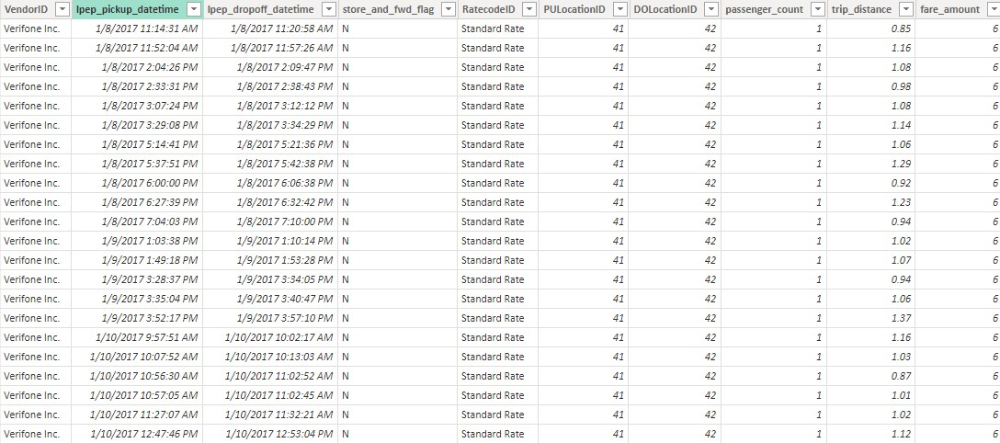
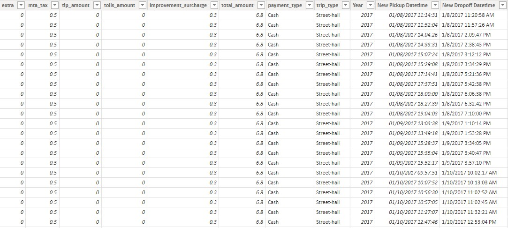
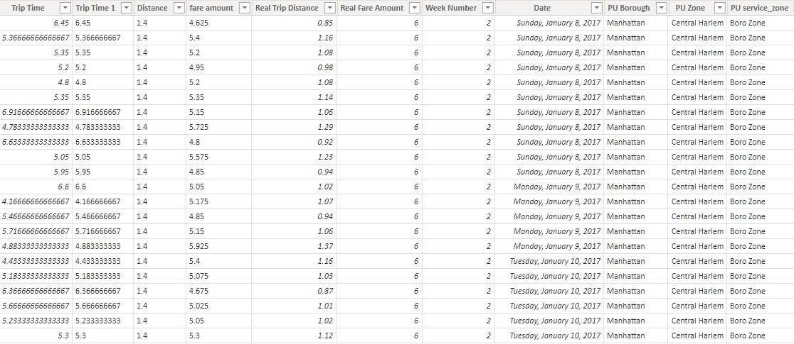
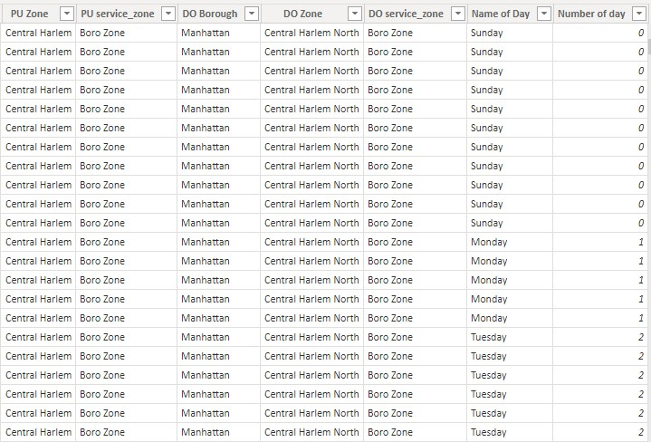

<!DOCTYPE HTML>
<html>
    <title>Trips Portfolio</title>
    <meta charset="utf-8" />
    <meta name="viewport" content="width=device-width, initial-scale=1, user-scalable=no" />
    <link rel="stylesheet" href="assets/css/main.css" />
    <noscript><link rel="stylesheet" href="assets/css/noscript.css" /></noscript>


</html>

<body>

    <div id="main">

        <!-- Featured Post -->
            <article class="post featured">
                <header class="major">
                    
                    <h4><a href="#">Adjustments and Assumptions to clean and prepare data</a></h4>
                </header>
                    <li>Stick to trips that were NOT sent via “store and forward”
                    </li>
                    <li>Only interested in street-hailed trips paid by card or cash, with a standard rate</li>
                    <li>Remove any trips with dates before 2017 or after 2020, along with any trips with 
                        pickups or drop-offs into unknown zones</li>
                    <li>Any trip with no recorded passengers had 1 passenger</li>
                    <li>If a pickup date/time is AFTER the drop-off date/time, Swap them
                    </li>
                    <li>Remove trips lasting longer than a day, and any trips which show both a distance 
                        and fare amount of 0</li>
                    <li>If you notice any record where the fare, taxes, and surcharges are ALL negative, please 
                        make them positive</li>
                    <li>For any trips that have a fare amount but have a trip distance of 0, calculate the distance 
                        this way: (Fare amount - 2.5) / 2.5</li>
                    <li>For any trips that have a trip distance but have a fare amount of 0, calculate the fare 
                        amount this way: 2.5 + (trip distance x 2.5)</li></br></br></br>

                    <p>
                        <a href="#" class="image main"></a>
                        <a href="#" class="image main"></a>
                        <a href="#" class="image main"></a>
                        <a href="#" class="image main"></a>
                    </p>
                    <p><H4>Visualization tool: Microsoft Power BI</H4></p>
            
                <a href="#" class="image main"></a>
                <ul class="actions special">
            </article>
       
    </div>
</body>